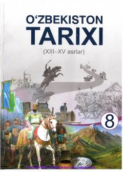

8O8-sinf o'quvchilari uchun XIII–XV asrlar O'zbekiston tarixi darsligi.
Mazkur darslik umumta'lim maktablarining 8-sinf o'quvchilari uchun mo'ljallangan bo'lib, O'zbekistonning XIII–XV asrlardagi tarixi, jumladan Xorazmshohlar davlati, Chingizxon istilosi, Chig'atoy ulusi hamda Amir Temur va temuriylar davri voqealarini yoritadi. Kitobda mamlakatimiz hududidagi siyosiy jarayonlar, davlatchilik an'analari, ilm-fan va madaniyatning rivojlanishi haqida batafsil ma'lumot berilgan.